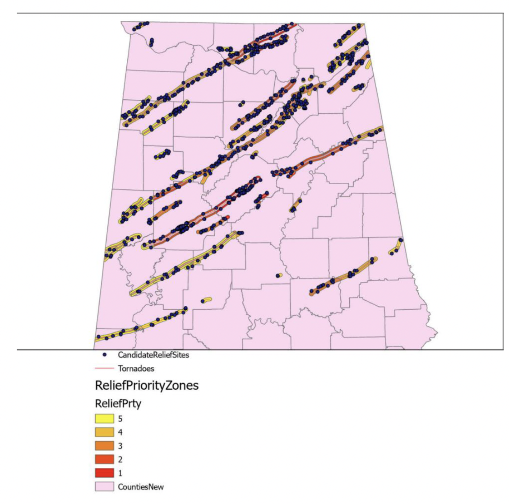

Emergency Management
Alabama Tornado Relief Analysis
Identified high-need zones for emergency relief centers using buffer analysis around 2011 tornado paths, enabling efficient allocation of disaster resources.
View Project